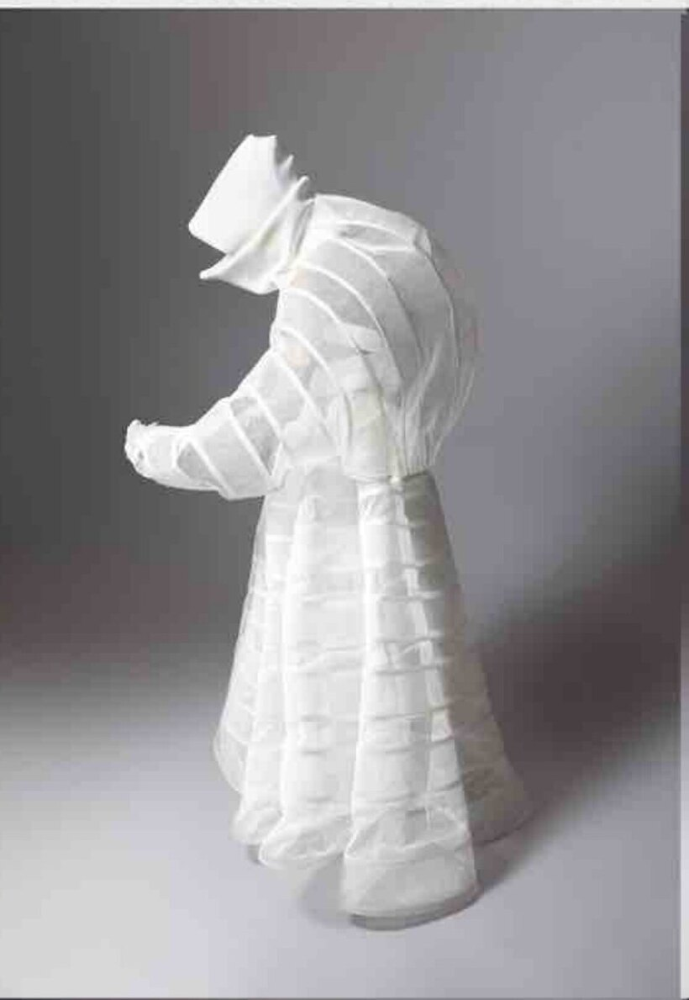

portfolio
Zahra Najafi
Creative Director & Systems Strategist
"Things are changing, where we can't see them, yet they affect how we live our lives — who we've become subconsciously, through unconscious consumption."
Flowers Are Blooming in Antarctica →